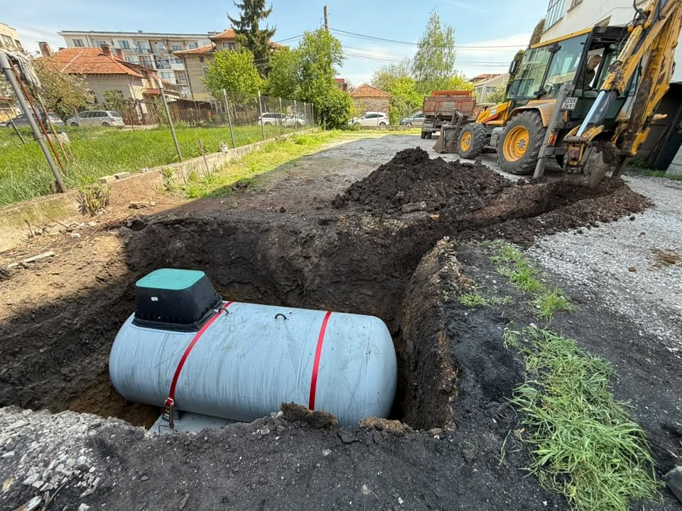

Газификация в Перник — какво включваме
За обекти в Перник осигуряваме оглед, оферта и изпълнение на газификация. Работим прозрачно: ясен обхват, качествено оборудване и настройка до готовност за ползване.
- Оглед на обекта в Перник
- Индивидуално техническо решение
- Доставка, монтаж и пускане
- Узаконяване при нужда
Защо локална фирма от Костинброд
Костинброд е стратегическа точка за София и София област — бърз достъп до Перник, Сливница, Драгоман, Годеч и околните села. Не сме фирма със сходно име от друг град.
Често задавани въпроси
Правите ли газификация в Перник?
Да. Мони Терм обслужва Перник и съседен на София област. Обадете се на 0886 391 729.
Откъде идва екипът?
Базата ни е в Костинброд — удобно за София и цяла София област.
Как се образува цената?
Индивидуална оферта след оглед на обекта.